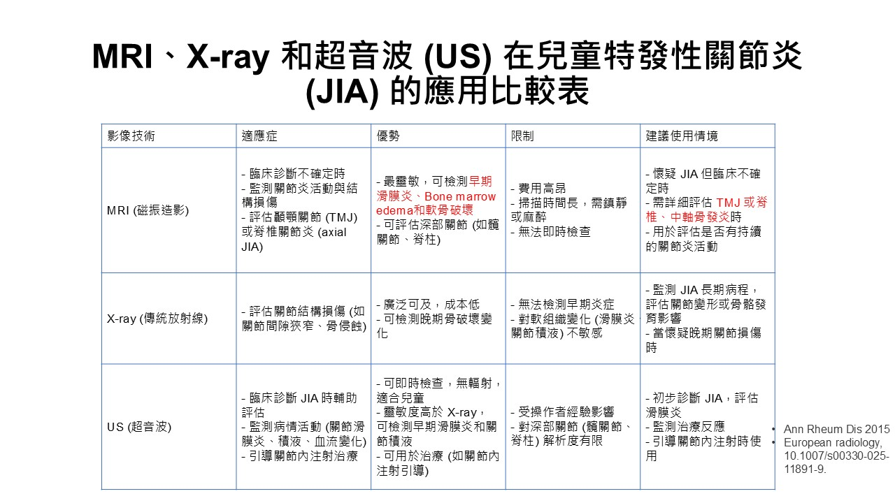
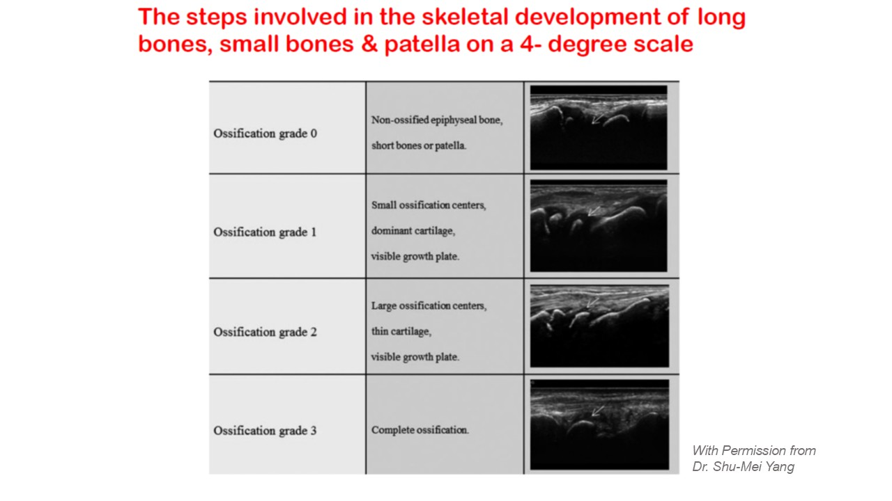
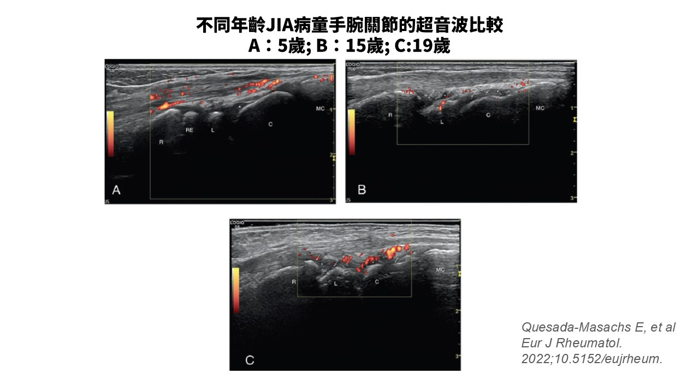
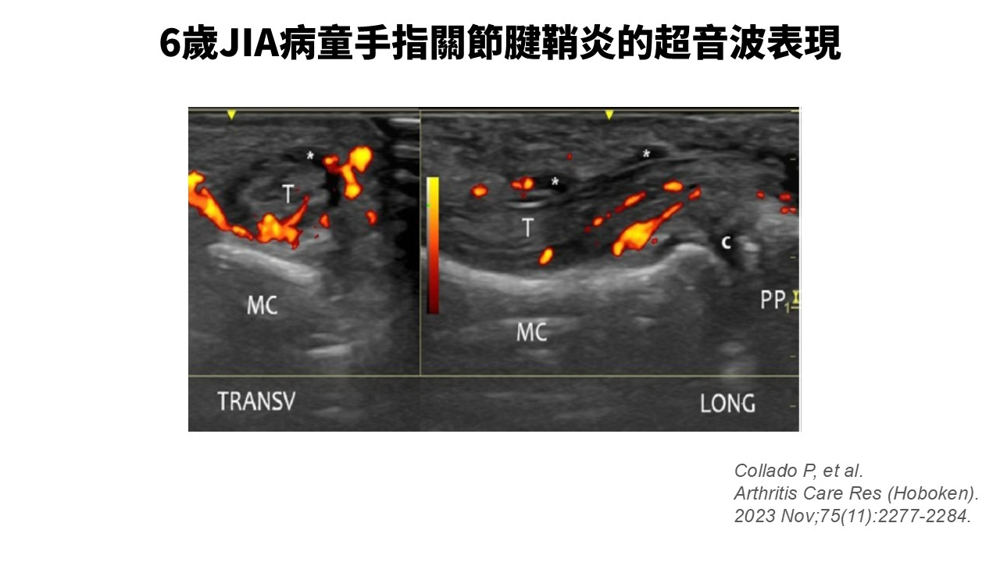

一、為什麼超音波特別適合小孩？
對兒童族群而言，超音波幾乎是「量身訂做」的影像工具：無輻射、不需鎮靜、可攜、快速、便宜、病人與家長接受度高，而且一次可以掃很多關節。相較之下，磁振造影（MRI）雖然是評估關節變化的最佳工具，能看到骨髓水腫等超音波看不到的細節，但年幼病童常需鎮靜、費用高、耗時長；X 光則在急性期幾乎幫不上忙，骨侵蝕往往要到疾病後期才顯現。
因此在 JIA，超音波的敏感度高於理學檢查，可用於協助診斷、評估發炎範圍、監測治療反應、早期偵測結構破壞，以及導引關節注射與抽吸。它最大的罩門則是高度操作者依賴（operator-dependent），加上兒童判讀標準仍在持續建立中。

二、關鍵差異：一副還在長大的骨骼
JIA 病童與成人 RA 最根本的差別，在於生長中的骨骼（growing skeleton）。兒童的骨骼尚未完全骨化，判讀時必須把以下這些「正常但看起來很像病灶」的構造放在心上：
骨骺（epiphysis）中仍存在大量透明軟骨（hyaline cartilage）與尚在成熟中的次級骨化中心（secondary ossification center）；生長板（physis）在超音波下呈現為無回音（anechoic）的未骨化結構。更重要的是，生長中的骨骺、軟骨與脂肪墊（fat pad）血流豐富，關節內、脂肪墊與未骨化結構中出現的能量都卜勒（power Doppler, PD）訊號可能是「生理性」的，尤其在最年幼的孩子身上，且與關節、年齡有關。若把這種生理性血流誤判為病理性滑膜炎，就是最常見的過度診斷陷阱。
OMERACT 兒童超音波小組（pediatric ultrasound task force）為此提出了一套骨化程度分級（0–3 分），提醒判讀者所見的骨化中心處於哪個成熟階段：
| 分級 | 超音波表現 |
|---|---|
| Grade 0 | 骨骺尚未骨化（短骨或髕骨） |
| Grade 1 | 小的骨化中心、軟骨為主、生長板清楚可見 |
| Grade 2 | 大的骨化中心、軟骨變薄、生長板仍可見 |
| Grade 3 | 完全骨化 |

三、先學會「正常」，才判讀得了「異常」
要偵測病理，前提是先把健康兒童關節的正常樣貌記熟。OMERACT 為健康兒童關節定義了幾項基本結構的超音波特徵：正常的透明軟骨呈邊界清楚、均質的低回音／無回音構造，且不可壓縮，軟骨表面可見一條高回音線；隨著成熟，骨骺次級骨化中心會由無回音轉為高回音構造；正常的滑膜（synovial membrane）薄到偵測不到，只有在肥厚時才會以低回音構造出現；正常關節囊呈骨與軟骨上方的高回音帶；關節骨表面則為銳利的高回音線。
四、滑膜炎的定義：兒童和成人不一樣
這是全篇最重要的觀念。在成人，EULAR–OMERACT 工作小組（D'Agostino 等人，2017 年發表；共識歷程 2005–2014）把灰階滑膜炎（GS synovitis）定義為低回音的滑膜增生（hypoechoic synovial hypertrophy），不論有無積液、也不論都卜勒訊號的等級——換句話說，光憑 B-mode 的滑膜增生就足以構成滑膜炎。這裡的關鍵改變是：滑膜積液（synovial effusion）被排除在滑膜炎的評分之外——單有積液、沒有滑膜增生，不算滑膜炎；因為積液的可靠度較低，也常隨體重與活動量而出現。但要注意，積液本身仍是 OMERACT 承認的基本病灶，必要時可另外單獨評分。（2019 年 Bruyn 等人的文獻則再次彙整並確認了這些基本病灶的定義。）
但這套成人定義不能直接套用到兒童，主要因為軟骨成熟與血流的顯著差異。經國際共識驗證後的兒童滑膜炎定義如下：
| 要素 | 兒童超音波定義 |
|---|---|
| 評估模式 | 須同時看 B-mode（灰階）與 PD；不能單靠 PD 判定滑膜炎 |
| 滑膜積液 | 關節內異常、無回音／低回音、可被推移（displaceable）的物質 |
| 滑膜增生 | 關節內異常、低回音、不可被推移（non-displaceable）的物質 |
| PD 訊號 | 須落在滑膜增生的範圍內才算滑膜炎的徵象 |
與成人最大的不同是：在兒童，滑膜積液仍保留在定義裡，而且滑膜炎可以單憑 B-mode 就成立。至於嚴重度，OMERACT 提供了 B-mode 與 PD 的合併半定量評分（0–3 分）：0 為無、1 為輕度、2 為中度、3 為重度；PD 部分則以「單一都卜勒訊號數目」與「佔滑膜增生面積是否超過 30%」來分級。

五、其他病理表現：腱鞘炎、軟骨、骨侵蝕
腱鞘炎（tenosynovitis）在 JIA 相當常見，尤其是腳踝，也因此腳踝特別難評估。一項研究以超音波評估 78 位病童、105 個臨床上「活動性」的腳踝，超音波偵測到腱鞘炎的比例（70.5%）遠高於理學檢查（32.4%）；另一項研究則發現臨床腫脹的腳踝只有 29% 是單純脛距關節積液。腱鞘炎在超音波下呈現為肌腱鞘增厚合併不規則低回音區。確認發炎的確切位置，直接影響你要不要、以及往哪裡做局部注射。
軟骨（cartilage）是發炎性關節炎的已知標的。雖然超音波無法在所有關節完整顯示軟骨，但軟骨厚度變薄可作為 JIA 早期破壞的標記。研究已建立健康兒童大、小關節的軟骨厚度正常值，並發現 JIA 病童的軟骨明顯較薄，且不論該關節先前是否曾發炎。隨疾病進展，軟骨會由均質變成不均質增厚、再變薄，最終消失並導致骨侵蝕。
骨侵蝕（bone erosion）的 OMERACT 定義是「在兩個互相垂直的平面上都可見的骨表面連續性中斷」。雖然骨侵蝕在 JIA 比 RA 少見，卻是重要的關節破壞徵象。要特別留意：兒童的侵蝕常發生在骨骺（epiphysis），而成人多在幹骺端（metaphysis）。由於兒童骨骺血管豐富，發炎可能從骨骺軟骨蔓延到骨化中心，造成過度生長與不可逆的關節變形。這也是為什麼「異常的骨骺／幹骺端生長」往往比骨侵蝕更早提供診斷線索。

六、次臨床滑膜炎：看得到、摸不到，重要嗎？
次臨床滑膜炎（subclinical synovitis）指的是受過訓練的醫師在理學檢查上「找不到發炎」，但超音波卻偵測得到的關節發炎。相當比例臨床上「無活動性」甚至「緩解中」的 JIA 病童與關節，其實仍帶有超音波下的次臨床活動；它較常出現在手腕、腳踝與手足小關節，也較常見於曾經發炎過的關節與多關節型病程的病童。
它的臨床意義目前是這樣：在預測復發（flare）方面，JIA 的資料互相矛盾——有些研究（如 Magni-Manzoni）發現超音波參數沒有預測價值，有些前瞻性研究則認為合併灰階與 PD 異常對復發的預測力明顯高於單看灰階。在預測結構破壞方面，資料相對一致：次臨床滑膜炎會增加 JIA 病童發生骨侵蝕的風險，而且與成人不同——這個風險與 PD 陽性與否無關。
七、標準化掃描與「減量」關節評分
目前 OMERACT 已為兒童的四個關節訂出標準化掃描位置：膝（前方髕上隱窩、外側髕旁隱窩）、腕（背側外／中／內）、第二掌指關節（MCP，背／側／掌側）、踝（內／中／外／背側）。其餘關節在專屬系統建立前，暫時沿用成人位置。
為了在合理時間內「掃最少關節、得到最多資訊」，成人風濕科醫師率先發展出減量超音波評分（如 7 關節、12 關節分數）。針對 JIA 也已發展出10 關節減量評分，與 44 關節的完整評分相關性良好，具效度、對長期變化敏感、臨床可行；有趣的是，在兒童，評估較少關節反而比評估較多關節對變化更敏感。
兒童四關節標準化掃描位置與探頭擺位
建議放置：膝、腕、第二 MCP、踝的探頭擺位示意圖（高頻線性探頭，約 8–15 MHz）
八、放進 Treat-to-Target 的臨床脈絡
JIA 治療目前的主要目標是臨床緩解（clinical remission），並朝 treat-to-target（T2T）策略前進。超音波比理學檢查敏感，理論上能協助更準確地界定發炎範圍——早期做甚至可能把部分「寡關節型」病童重新分類為「多關節型」，而這會直接影響治療與預後。不過必須誠實地說：在成人 RA 的兩項隨機試驗中，系統性地用超音波來做治療決策，並未優於嚴格的臨床控制；超音波在 JIA 的 T2T 中扮演什麼角色，仍有待更多研究。
值得注意的是新近指引的走向：2026 ACR JIA 指引在「非全身型 JIA、緩解中、考慮減藥或停藥」時，有條件建議對難以評估的關節進行影像檢查再做決定——這正是超音波（與 MRI）可以補位之處。而2026 APLAR 亞太共識則提醒我們現實面：亞太多為中低收入國家，MSUS 與 MRI 的可近性有限，臨床上常以 cJADAS-10 做治療目標與監測、以傳統 X 光評估骨與關節破壞；在資源有限時，X 光仍是可行的骨侵蝕評估工具。這也是為什麼許多地區的成人風濕科醫師，需要一起承擔 JIA 病童的追蹤。
結語
超音波是管理 JIA 病童安全又實用的工具，可以評估多數關節、監測治療反應、導引局部處置，並偵測可能預示破壞與復發的次臨床發炎。但它的前提是：操作者要熟悉兒童解剖、認得生長中骨骼的正常變化，並牢記兒童與成人在滑膜炎定義、PD 判讀、侵蝕位置上的差異。把成人標準原封不動搬過來，往往既不精確、也不適用。在 T2T 逐漸普及的年代，超音波很可能在未來成為輔助臨床決策的重要一環——但「何時掃、掃哪些關節、掃多密」這些問題，仍有待前瞻性大型研究來回答。
- 超音波對兒童無輻射、免鎮靜、可多關節評估，敏感度高於理學檢查；MRI 才看得到骨髓水腫，X 光在急性期幫助有限。
- 生長中骨骼的未骨化軟骨、次級骨化中心與生理性血流，是最常見的誤判來源——健康兒童關節內不應出現病理性 PD。
- 兒童滑膜炎須同時看 B-mode 與 PD、不能只憑 PD；與成人不同，積液仍保留在兒童定義中，PD 必須落在滑膜增生內。
- 軟骨變薄是早期破壞標記；骨侵蝕須見於兩垂直平面，兒童好發於骨骺（成人多在幹骺端）。腱鞘炎常見且常被理學檢查漏掉，尤其腳踝。
- 次臨床滑膜炎會增加骨侵蝕風險（且與 PD 陽性無關）；對復發的預測仍有爭議，合併灰階＋PD 異常預測力較佳。
- 已有兒童四關節標準化掃描位置與 10 關節減量評分；2026 ACR 建議減藥前對難評估關節做影像，APLAR 則提醒亞太資源可近性的現實限制。
參考文獻
- Quesada-Masachs E, López-Corbeto M, Moreno-Ruzafa E. Ultrasound in pediatric rheumatology: highlighting the differences with adults. Eur J Rheumatol. 2022. doi:10.5152/eujrheum.2022.21119.
- Tsujioka Y, Nishimura G, Sugimoto H, Nozaki T, Kono T, Jinzaki M. Imaging findings of juvenile idiopathic arthritis and autoinflammatory diseases in children. Jpn J Radiol. 2023;41(11):1186-1207.
- Arkachaisri T, Teh KL, Vilaiyuk S, et al. The Asia-Pacific League of Associations for Rheumatology consensus recommendations on the management of juvenile idiopathic arthritis. Int J Rheum Dis. 2026;29(4):e70640.
- American College of Rheumatology. 2026 ACR Juvenile Idiopathic Arthritis (JIA) Guidelines Summary. Approved February 20, 2026.
- Roth J, Ravagnani V, Backhaus M, et al. Preliminary definitions for the sonographic features of synovitis in children. Arthritis Care Res. 2017;69(8):1217-1223.
- Roth J, Jousse-Joulin S, Magni-Manzoni S, et al. Definitions for the sonographic features of joints in healthy children. Arthritis Care Res. 2015;67(1):136-142.
- Collado P, Vojinovic J, Nieto JC, et al. Toward standardized musculoskeletal ultrasound in pediatric rheumatology: normal age-related ultrasound findings. Arthritis Care Res. 2016;68(3):348-356.
- Bruyn GA, Iagnocco A, Naredo E, et al. OMERACT definitions for ultrasonographic pathologies and elementary lesions of rheumatic disorders 15 years on. J Rheumatol. 2019;46(10):1388-1393.
- D'Agostino MA, Terslev L, Aegerter P, et al. Scoring ultrasound synovitis in rheumatoid arthritis: a EULAR-OMERACT ultrasound taskforce — Part 1: definition and development of a standardised, consensus-based scoring system. RMD Open. 2017;3(1):e000428.
- Magni-Manzoni S, Scirè CA, Ravelli A, et al. Ultrasound-detected synovial abnormalities are frequent in clinically inactive juvenile idiopathic arthritis, but do not predict a flare of synovitis. Ann Rheum Dis. 2013;72(2):223-228.
- Miotto e Silva VB, de Aguiar Vilela Mitraud S, Furtado RNV, et al. Patients with JIA in clinical remission with positive power Doppler signal have an increased rate of clinical flare: a prospective study. Pediatr Rheumatol. 2017;15(1):80.
- Lanni S, Marafon DP, Civino A, et al. Comparison between clinical and ultrasound assessment of the ankle region in juvenile idiopathic arthritis. Arthritis Care Res. 2021;73(8):1180-1186.
- Collado P, Naredo E, Calvo C, et al. Reduced joint assessment vs comprehensive assessment for ultrasound detection of synovitis in juvenile idiopathic arthritis. Rheumatology (Oxford). 2013;52(8):1477-1484.
本文為教學導讀，整理自上述文獻，內容供醫療專業人員參考，不取代個別病童之臨床判斷。